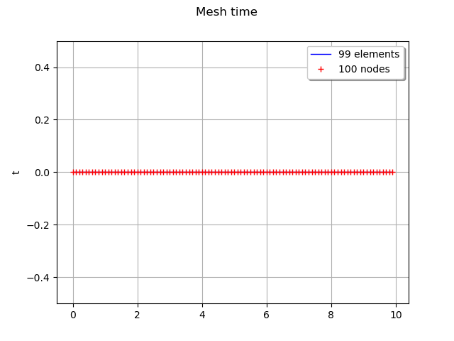
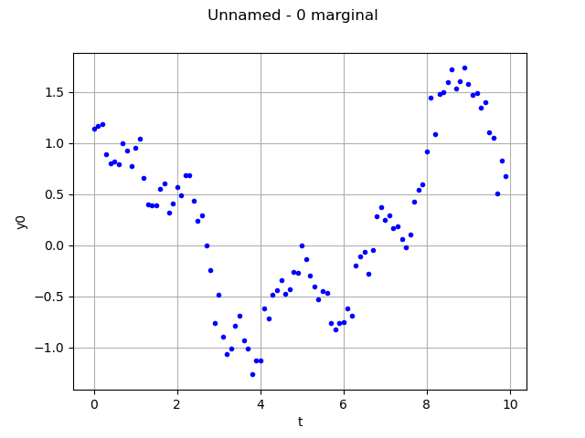
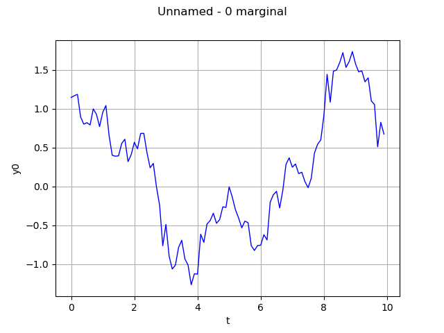
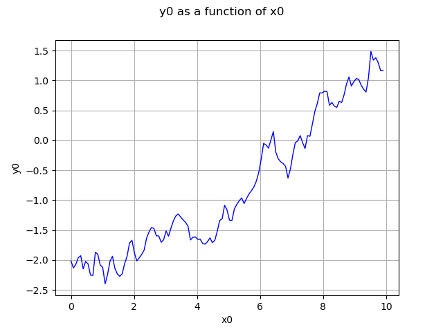
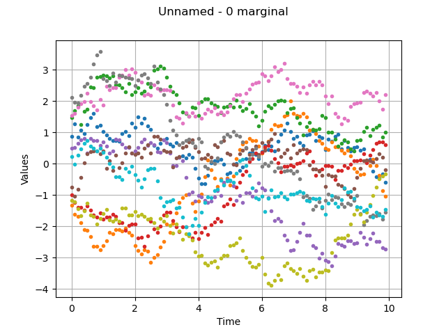
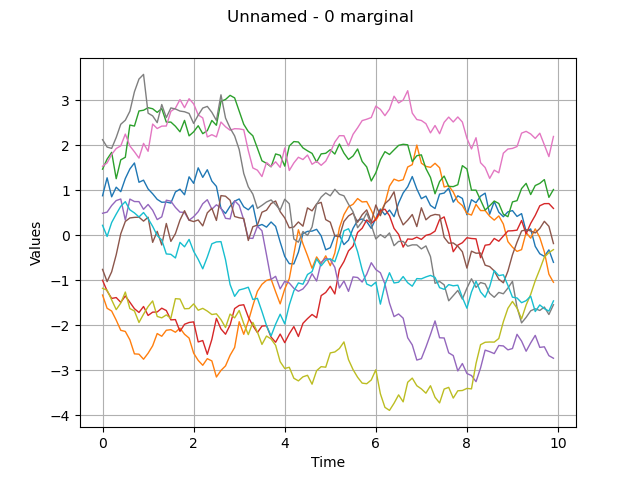

Note
Click here to download the full example code
Process manipulation¶
The objective here is to manipulate a multivariate stochastic process  , where
, where  is discretized on the mesh
is discretized on the mesh  and exhibit some of the services exposed by the Process objects:
and exhibit some of the services exposed by the Process objects:
ask for the dimension, with the method getOutputDimension
ask for the mesh, with the method getMesh
ask for the mesh as regular 1-d mesh, with the getTimeGrid method
ask for a realization, with the method the getRealization method
ask for a continuous realization, with the getContinuousRealization method
ask for a sample of realizations, with the getSample method
ask for the normality of the process with the isNormal method
ask for the stationarity of the process with the isStationary method
from __future__ import print_function
import openturns as ot
import openturns.viewer as viewer
from matplotlib import pylab as plt
import math as m
ot.Log.Show(ot.Log.NONE)
Create a mesh which is a RegularGrid
tMin = 0.0
timeStep = 0.1
n = 100
time_grid = ot.RegularGrid(tMin, timeStep, n)
time_grid.setName('time')
Create a process of dimension 3 Normal process with an Exponential covariance model Amplitude and scale values of the Exponential model
scale = [4.0]
amplitude = [1.0, 2.0, 3.0]
# spatialCorrelation
spatialCorrelation = ot.CorrelationMatrix(3)
spatialCorrelation[0, 1] = 0.8
spatialCorrelation[0, 2] = 0.6
spatialCorrelation[1, 2] = 0.1
myCovarianceModel = ot.ExponentialModel(scale, amplitude, spatialCorrelation)
process = ot.GaussianProcess(myCovarianceModel, time_grid)
Get the dimension d of the process
process.getOutputDimension()
Out:
3
Get the mesh of the process
mesh = process.getMesh()
# Get the corners of the mesh
minMesh = mesh.getVertices().getMin()[0]
maxMesh = mesh.getVertices().getMax()[0]
graph = mesh.draw()
view = viewer.View(graph)

Get the time grid of the process only when the mesh can be interpreted as a regular time grid
process.getTimeGrid()
RegularGrid(start=0, step=0.1, n=100)
Get a realisation of the process
realization = process.getRealization()
#realization
Draw one realization
interpolate=False
graph = realization.drawMarginal(0, interpolate)
view = viewer.View(graph)

Same graph, but draw interpolated values
graph = realization.drawMarginal(0)
view = viewer.View(graph)

Get a function representing the process using P1 Lagrange interpolation (when not defined from a functional model)
continuousRealization = process.getContinuousRealization()
Draw its first marginal
marginal0 = continuousRealization.getMarginal(0)
graph = marginal0.draw(minMesh, maxMesh)
view = viewer.View(graph)

Get several realizations of the process
number = 10
fieldSample = process.getSample(number)
#fieldSample
Draw a sample of the process
graph = fieldSample.drawMarginal(0, False)
view = viewer.View(graph)

Same graph, but draw interpolated values
graph = fieldSample.drawMarginal(0)
view = viewer.View(graph)

Get the marginal of the process at index 1 Care! Numerotation begins at 0 Not yet implemented for some processes
process.getMarginal([1])
GaussianProcess(trend=[x0]->[0.0], covariance=ExponentialModel(scale=[4], amplitude=[2], no spatial correlation))
Get the marginal of the process at index in indices Not yet implemented for some processes
process.getMarginal([0, 1])
GaussianProcess(trend=[x0]->[0.0,0.0], covariance=ExponentialModel(scale=[4], amplitude=[1,2], spatial correlation=
[[ 1 0.8 ]
[ 0.8 1 ]]))
Check wether the process is normal
process.isNormal()
Out:
True
Check wether the process is stationary
process.isStationary()
plt.show()
Total running time of the script: ( 0 minutes 0.513 seconds)